Project
HAFIZA, IRFAN, TERRY AND LIN ZHAO
Our end-of-year project requires us to include 3D printing, laser cutting and Arduino. My group and I decided to build a lamp that can be used for daily purposes and it also uses magnet as its switch.
We started our draft by using SketchUp and we managed to get the final design of our model before proceeding to laser cut the surfaces.
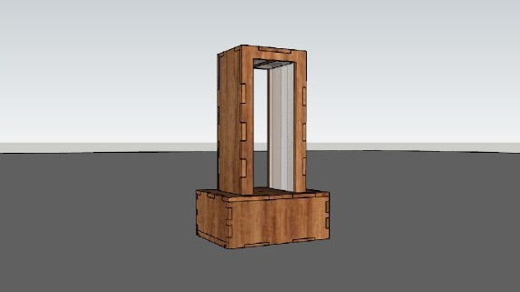We flattened the surface of the base in SketchUp and the top portion of the lamp in AutoCad to prepare it for laser cutting
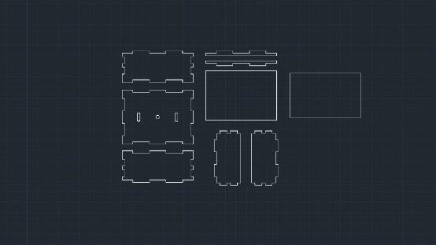 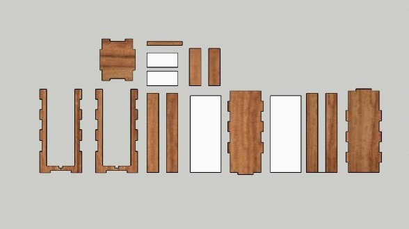Once we are done with the surfaces, we then proceeded to laser cut the faces using a 3mm thick plywood for the whole item with pieces of acrylic to cover the LED strips.
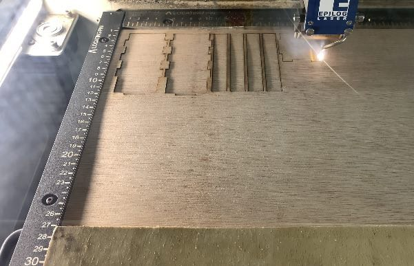 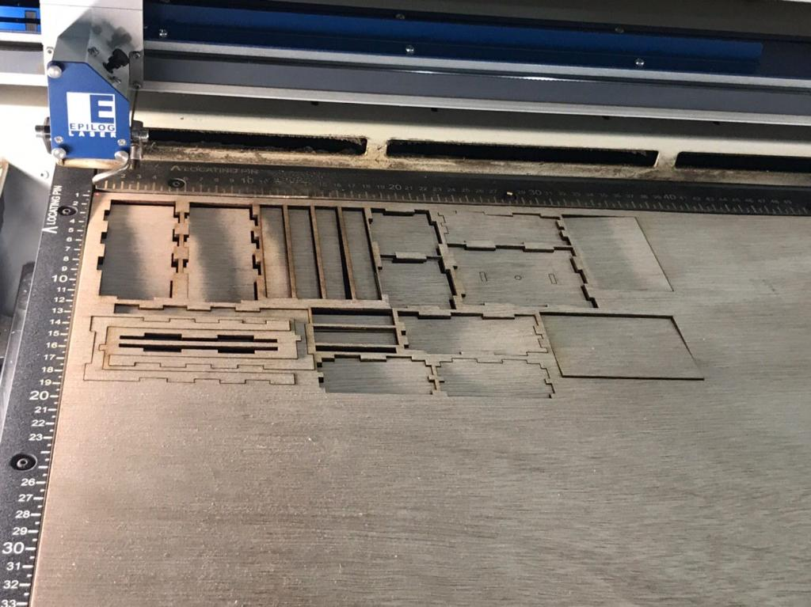 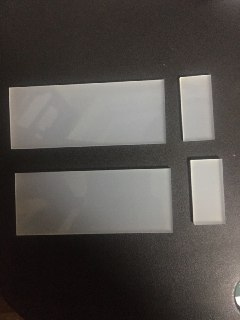All the edges are glued together for a stronger bond
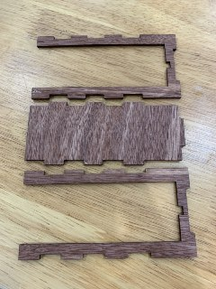 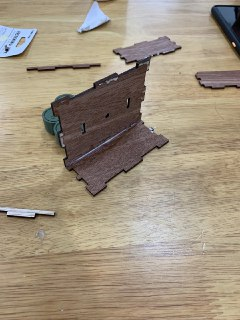 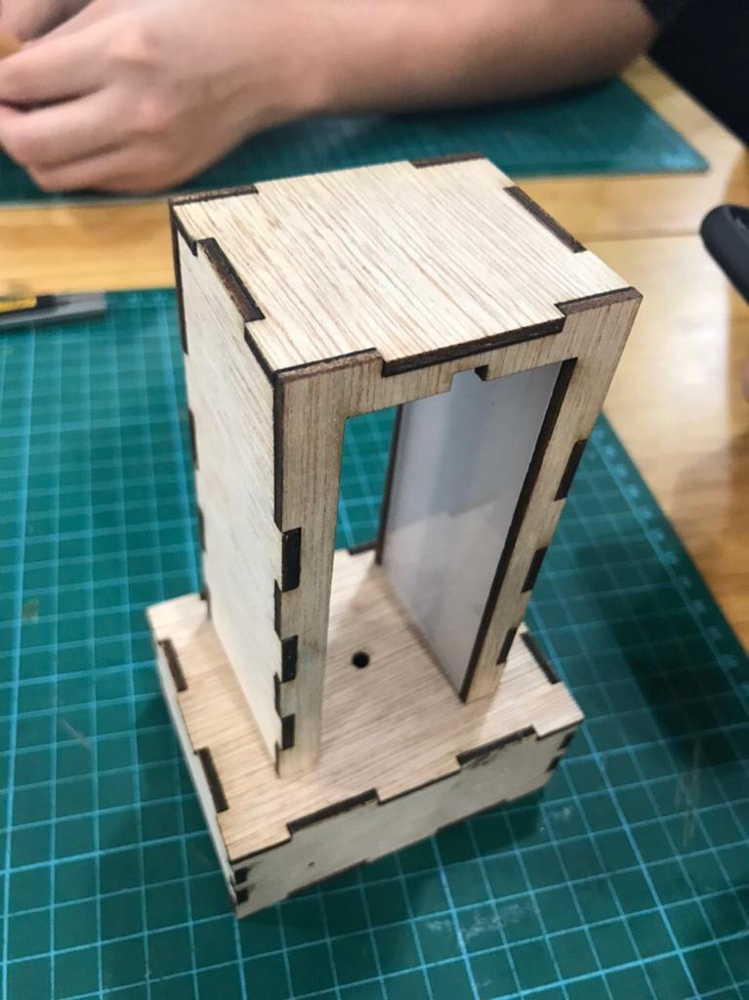14 LED lights are used for this product.
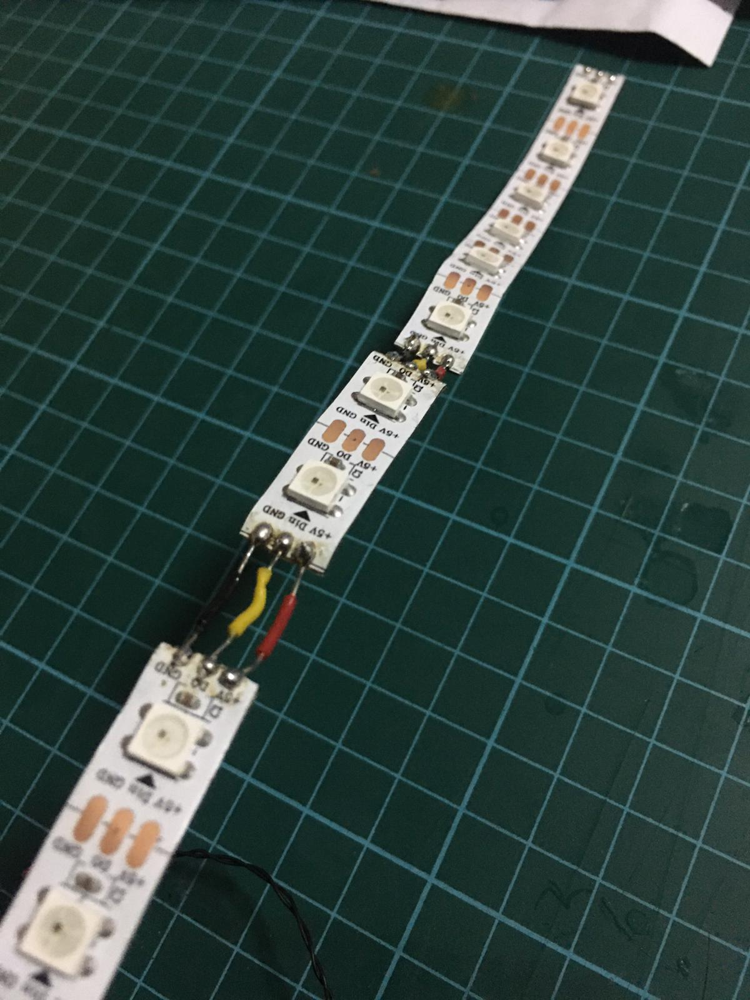All the electrical components will be hidden inside the base of the lamp which will be covered by a sliding 6mm plywood.
 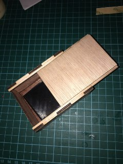
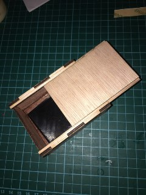
A 4mm wide hole will be cut for the string of the magnet.
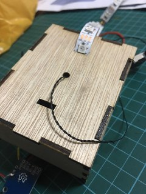And this is the result of our product.